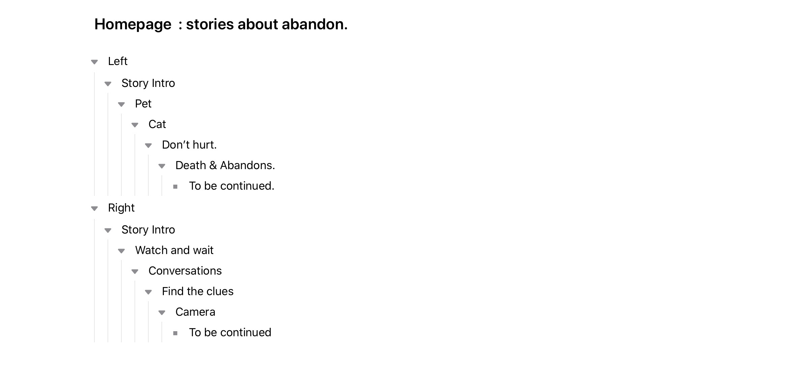
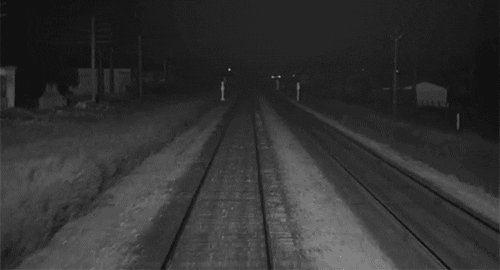
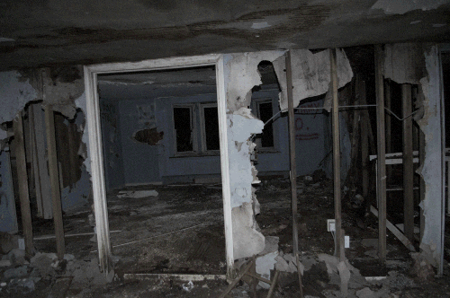

webWORK Proposal



Here are some stories about abandonment. Abandoned behavior and results can be linked to the topic of emotion and time.
Under what trend of uncontrollable emotions do people?
Will it be discarded? What lovely story did the discards change with time? There are many homicides here, and how naive and naive a death and murder is.
Different image information effects, sound effects,
which are programmed and controlled, are pieced together to present
different stories.